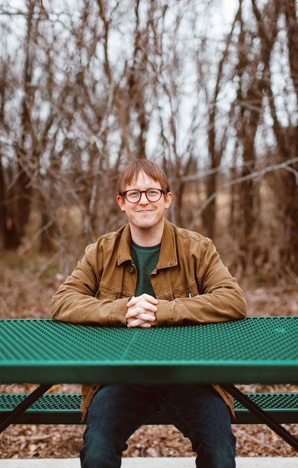
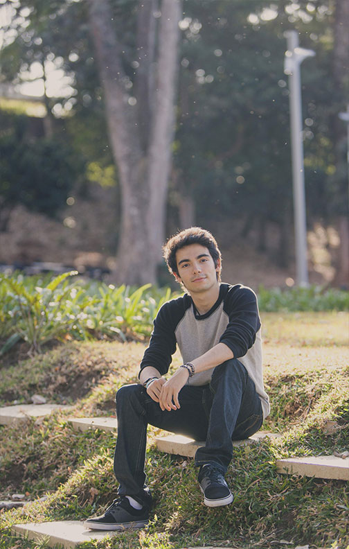
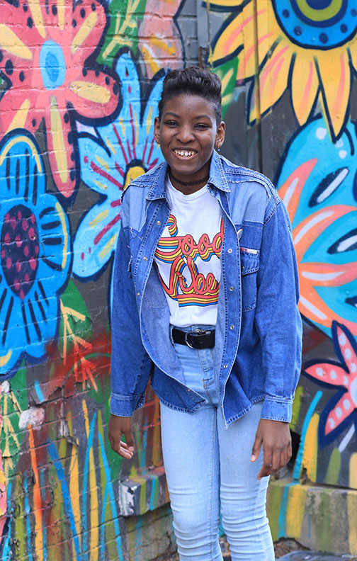
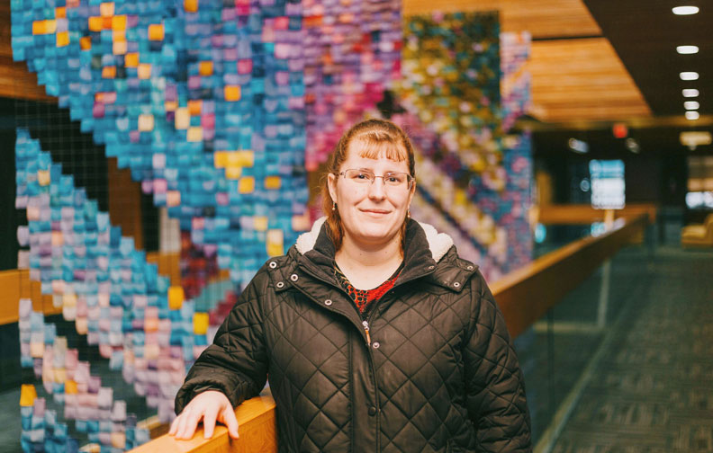
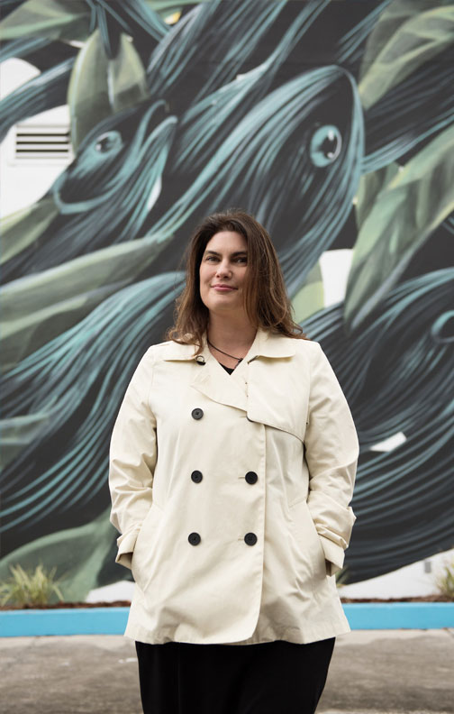

Estaba estudiando Artes, especializándome en Escritura Creativa, y he estado escribiendo desde una edad muy temprana. Recuerdo cómo usaba perforadoras y cintas para crear mis propios libros encuadernados cuando era niña. En la escuela, escribía cuentos sobre mis amigos y los regalaba. Compartir mis palabras con el mundo siempre ha sido mi sueño. Tan pronto como comencé a leer en Wattpad, me di cuenta que quería subir mi trabajo esta plataforma. La audiencia ya estaba allí, esperándome. Esto me ha fortalecido como escritora e influenció mi trabajo y mi proceso creativo.
Historias Pagadas ha sido el primer y más grande escalón en mi carrera y mi visión para escribir de forma profesional. Tener conciencia de que lectores a nivel global han pagado para leer mis historias con el dinero que les cuesta tanto ganar, es increíble. Es una experiencia que me hace sentir humilde y agradecida ante ellos. Es gratificante saber que aquello que escribo es importante para alguien, y que la gente quiere escuchar el mensaje que estoy dispuesta a llevar.
No creo que hubiese escrito tanto como lo estoy haciendo ahora, si no fuera por Wattpad. Ver como los lectores me alientan a medida que avanzo ha aumentado mi confianza y me ha motivado a escribir. Los comentarios instantáneos que recibo de lectores dedicados son muy útiles en mi desarrollo como escritora.
— Ellen Kirkpatrick, Berlin Germany
En cuanto aprendí a escribir, en ese momento comencé a crear historias. Primero en lápiz y papel, luego en una vieja máquina de escribir, y así sucesivamente. Sin importar cómo cambiaron mis intereses o cómo cambié como persona, continué escribiendo. Lo haré hasta en mi lecho de muerte. Wattpad significa la oportunidad de leer y disfrutar mi trabajo, la oportunidad de probar nuevas historias y hacer cambios para mejorarlas. Nuestras historias van a través de un cambio increíble desde esa primera lectura hasta la número mil. ¡Es una oportunidad única para perfeccionar nuestro oficio!
Historias Pagadas ha impactado mi trabajo de una manera importante al ofreceme seguridad. Cuando escribes, trabajas por tu cuenta en un proyecto durante semanas, meses o incluso años. Completas tu historia solo, y después de un tiempo, las dudas abren paso a la persistente insistencia de tu cerebro de que en realidad eres terrible y que nadie querrá leer esto. Pero por ahora, este programa significa haber alcanzado un sentido de seguridad en aquello que hago.
Estas historias tardan horas en completarse, horas que se restan del trabajo y la familia, cualquier momento que nos encontremos libres. Dedicar gran parte de tu vida a crear historias que encantan al público, y luego ver cómo la gente descubre y apoya tu historia es realmente una experiencia maravillosa.
— Elford Alley, Tom Bean Texas


Me di cuenta que la escritura era algo más que un pasatiempo cuando logré que mis personajes tuvieran vida propia, que los lectores hablaran de ellos sabiendo que tienen su propia autonomía, forma de pensar y personalidad. ¡Ese ha sido de mis mayores logros!
sí, es cierto que escribimos porque nos encanta, pero el recibir el apoyo de los lectores transmite una energía positiva que hace que la creatividad se impulse enormemente. El saber que hay alguien esperando siempre por más es algo que me motiva todos los días.
Las historias auspiciadas de Wattpad han hecho un cambio en cuanto a mi vida al ver que la gente sí está dispuesta a brindar apoyo a cambio de contenido de calidad, eso me hace muy feliz, ¡ya que aparte de apoyarme con sus comentarios y votos son capaces de ayudarme económicamente!
El publicar hoy día no es nada fácil, es un ambiente muy competitivo y hay que luchar duro para lograrlo. El apoyo económico es una manera de decirle al autor que ahí están para él, que su trabajo sí vale dinero y que están dispuestos a seguir disfrutando a cambio de un aporte como este.
— Alejandro Murillo, San Jose, Costa Rica
Wattpad es un hogar para mí. Un lugar donde puedo ser yo misma y relacionarme con los demás. He encontrado mucho consuelo en Wattpad al compartir historias de ficción y de la vida real. Siempre estoy muy agradecida cuando alguien se toma el tiempo para descubrir una trama creada por mí. Es divertido y emocionante.
Me di cuenta de que escribir era más que un pasatiempo cuando comencé a tomarme en serio los comentarios y al ver cómo, de alguna manera, mis libros de terror proveen a los lectores de un escape, tal como lo hacen otros libros para mí. Cuando un lector se encuentra con mis historias, siempre experimento un sentimiento de gratitud que nace de adentro. Me siento muy agradecida de que alguien se haya tomado el tiempo para seguir un argumento escrito por mi. ¡Es divertido y emocionante! Es difícil para los artistas continuar lo que quieren hacer en la vida si no reciben apoyo. Historias Pagadas impactaron mi vida al darme la oportunidad de ganar dinero a través de mi actividad favorita, y también me motiva. No es fácil para los escritores. Tendemos a perder motivación durante meses y años preguntándonos si vale la pena. Historias Pagadas hizo que valiera la pena para mí.
— Jakayla Toney, East Orange, New Jersey


El amor por la escritura me atrapó y me tendió una emboscada. Todavía no estoy muy segura de cuándo llegué al punto de inflexión, pero la emoción de terminar una historia y la alegría de interactuar con los lectores son los aspectos más destacados de mi labor como escritora. Uno de mis momentos más importantes de "descubrimiento" llegó cuando mi primer libro llegó a un millón de lecturas en Wattpad. Sentí que había ganado un premio; algo que nunca imaginé mientras escribía esa historia. Es un sentimiento de libertad que llega con poder escribir lo que quiero. Wattpad es un lugar fantástico para comenzar la carrera de escritura. Hay espacio para todos.
Historias Pagadas fue un nuevo mundo para mí: fue el primer paso a recibir pago por mi trabajo. Me ha abierto varias puertas y ha sido una oportunidad inolvidable.
El dinero del programa Historias Pagadas me permite encargar portadas a comisión, comprar software de edición, dedicarme a otros aspectos de la escritura y tener más libertad en general.
En lugar de solo publicar en Wattpad por diversión, ahora tengo una razón para publicar más historias gratuitas, las cuales mis lectores pueden disfrutar, mientras espero que algunos se interesen en mi Historia Pagada. Otro elemento que disfruto es la capacidad de poder hablar o a veces simplemente pasar un buen rato con otros escritores envueltos en el programa.
Nuestros lectores nos permiten hacer un diferencia, ya sea a través de la lectura, la votación, los comentarios o formas más sustanciales como invertir en monedas. Nuestros lectores nos ayudan a crecer con su apoyo.
— Crystal Scherer, Athabasca Alberta
¡Estuve evitando escribir ficción hasta que cumplí cuarenta y tres años! Una vez que empecé a escribir ficción, me di cuenta de que era escritora, cuando me descubrí pensando más en los personajes de mis libros que las cosas que ocurrían en la vida real. Me acerqué a Wattpad para tratar con la publicación de un romance serializado. Me encanta la ficción en serie, por eso Wattpad está hecho a medida para mí. Es un sentimiento único, ese momento cuando los lectores descubren y "captan" mis historias. Los lectores realmente se conectan con mis héroes porque Son creados con ambiciones reales, y ver eso es muy satisfactorio.
Historias Pagadas me permite dedicarme a la escritura de ficción como un trabajo de tiempo completo. Ahora crear mundos es mi trabajo. Estoy muy feliz con este aspecto de mi vida. Cuento con una comunidad de compañeros escritores que están ansiosos y emocionados de hablar sobre la escritura. No se trata de mercadear la historia, ni de industria, sino del puro arte. Es un lugar para compartir ideas y comentarios. La capacidad de escribir lo que quiero significa libertad para mí. Las palabras deben ser reconocidas por su valor. El contenido debe ser reconocido por su valor. Pero una historia bien editada y un libro que sea el producto de un proceso digno debe ser celebrado. Hay poder en las palabras y con tal reverencia debemos tratarlas.
— Tamara Lush, St. Petersburg, Florida
